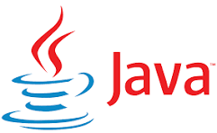

O que já aprendemos em apenas 2 meses?


Bem-vindo ao universo inspirador das Dev Moms - mulheres incríveis que estão trilhando o caminho da programação enquanto equilibram a jornada desafiadora da maternidade. Em nosso site, mergulhe nas histórias autênticas dessas mulheres corajosas que escolheram enfrentar o desafio de aprender a programar enquanto cuidam de suas famílias.
Nossas Dev Moms são verdadeiras heroínas modernas, desbravando o mundo da tecnologia com paixão e dedicação. Compartilhamos suas experiências, conquistas e desafios, destacando a resiliência e a força que as impulsionam a superar obstáculos diários. Descubra como essas mulheres visionárias equilibram o desenvolvimento profissional com a maternidade, encontrando apoio em comunidades online, programas de mentoria e recursos educacionais. Através de relatos sinceros, queremos inspirar outras mulheres a embarcar nessa jornada transformadora, mostrando que é possível alcançar o sucesso na carreira de desenvolvedora enquanto desfrutam da maravilhosa experiência de ser mãe.